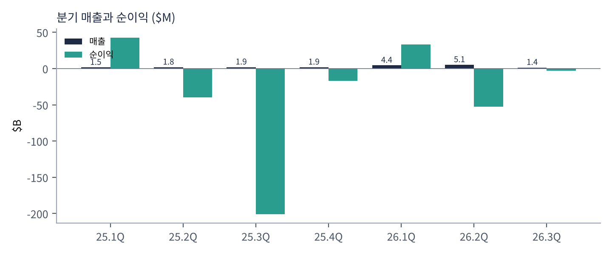
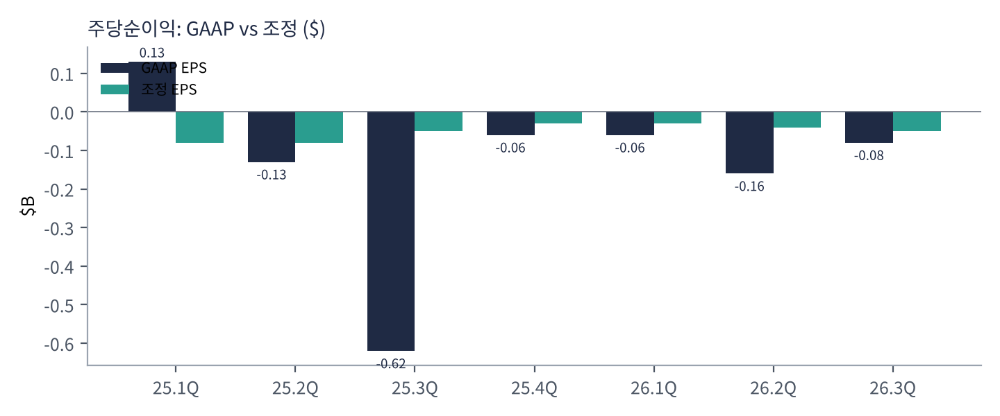
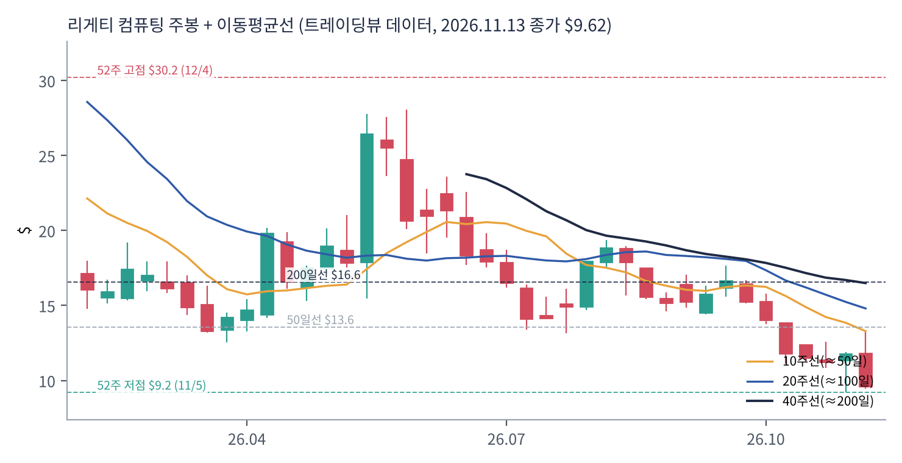
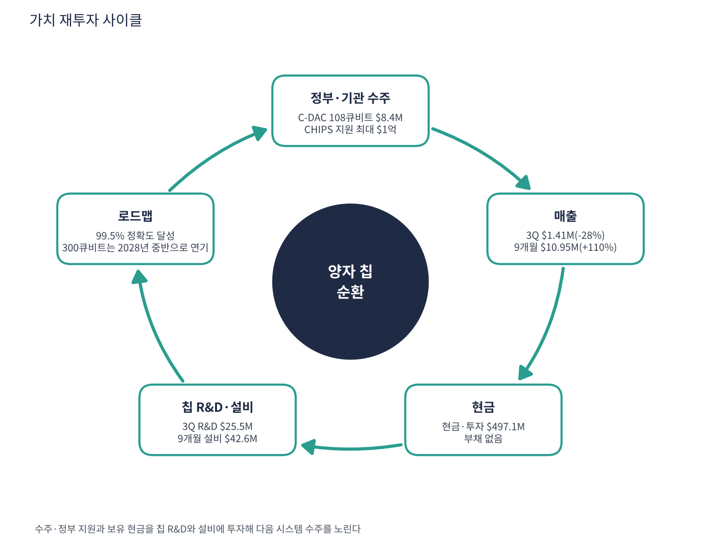

리게티 컴퓨팅은 초전도 방식 양자컴퓨터 칩과 시스템을 직접 만드는 회사다. 자체 칩 제조 설비를 갖췄지만 매출이 아주 작고 올해 목표 달성이 빠듯한 초기 단계 회사다.
| 항목 | 내용 |
|---|---|
| 종목 | Rigetti Computing (RGTI) · NASDAQ · 양자컴퓨팅 |
| 밸류에이션 | PER 적자 (11/13 종가 $9.62) |
| 최근 분기(3Q26) | 매출 $1.4M(−28%), 영업손실 $33.2M, R&D $25.5M |
| 9개월 매출 | $10.9M(+110%) |
| 가이던스 | 2026 매출 약 $0.20억 목표(4분기 약 $0.09억 필요) |
| 현금·부채 | 회사: 현금·투자 $4.97억, 스캐너 현금 $3.83억, 차입금 $0.07억, TTM 잉여현금 −$1.11억 |
| 직책 | 인물 | 역할·특징 |
|---|---|---|
| CEO | 수보디 쿨카르니 | 정부·연구기관 주문 확대, 99.5% 충실도 달성 강조 |
경영 스타일: '칩 품질 지표를 먼저 올리고 로드맵을 재설계'. 2028년 중반까지 300큐비트 이상으로 로드맵을 다시 잡았다(회사). 상업 매출보다 정부 계약 비중이 크다.
자체 팹에서 칩을 만들어 시스템에 얹는다. 99.5% 이중 큐비트 충실도를 달성했다고 밝혔다.
2028년 중반까지 300큐비트 이상 시스템을 목표로 한다.
| 분기 | 매출 ($M) | 순이익 ($M) | EPS | 조정 EPS | 특이 사항 |
|---|---|---|---|---|---|
| 2025.1Q | 1.5 | 42.6 | 0.13 | -0.08 | 워런트 평가이익으로 순이익 흑자 |
| 2025.2Q | 1.8 | -39.7 | -0.13 | -0.08 | |
| 2025.3Q | 1.9 | -201.0 | -0.62 | -0.05 | 워런트 평가손실로 순손실 급증 |
| 2025.4Q | 1.9 | -17.2 | -0.06 | -0.03 | 4분기 값 근사* |
| 2026.1Q | 4.4 | 33.1 | -0.06 | -0.03 | |
| 2026.2Q | 5.1 | -52.6 | -0.16 | -0.04 | |
| 2026.3Q | 1.4 | -3.1 | -0.08 | -0.05 | 매출 −28%, 영업손실 $0.33억 |


* 4분기 값은 '연간 − 1~3분기 합' 근사치. 리게티는 SEC 분기 자료상 7개 분기만 정리해 8분기 중 1개 분기(2024년 4분기)는 빠졌다. 순이익은 워런트 평가손익으로 크게 출렁여 사업 성과를 보려면 조정 EPS와 영업손실을 함께 봐야 한다(확인 필요).
흐름 요약: 매출은 2026년 1~2분기 $0.44~0.51억으로 늘었다가 3분기 $0.14억으로 줄었다. 조정 EPS는 −$0.03~−$0.08로 일정하다. 분기 설비투자는 구하지 못했다.
| 항목 | 값 | 비고 |
|---|---|---|
| 3Q 매출 | $0.014억 | −28% |
| 9개월 매출 | $0.110억 | +110% |
| C-DAC 주문 | $0.084억 | 인도 국책 연구기관 |
| Commerce 협약 | $1.0억 | 정부 지분 투자(보도) |
정부·연구기관 의존도가 높다. 부문별 비중은 구하지 못했다.
리게티는 '성능이 입증된 칩을 규모로 키우는 회사'가 되려 한다.
| 축 | 최근 움직임 |
|---|---|
| 성능 | 99.5% 충실도 |
| 로드맵 | 300큐비트+ 2028년 중반(재설계) |
| 위험 | 매출 변동, 가이던스 달성 불확실 |

| 이동평균 | 값 | 종가 대비 | 해석 |
|---|---|---|---|
| 5일선 | $11.24 | -14.4% | 현재가가 아래 |
| 20일선 | $11.44 | -15.9% | 현재가가 아래 |
| 50일선 | $13.56 | -29.1% | 현재가가 아래 |
| 100일선 | $15.03 | -36.0% | 현재가가 아래 |
| 200일선 | $16.56 | -41.9% | 현재가가 아래 (-42%) |
주봉 흐름: 52주 고점 $30.2(2025.12.4) 이후 하락해 2026.11.5 저점 $9.19를 찍었다. 현재가 $9.62는 모든 이동평균선 아래다.
| 규칙 | 기준 | 현재 값 | 신호 |
|---|---|---|---|
| 장기 추세 필터 | 종가 vs 200일선 | $9.62 < $16.56 | 매도 |
| 중장기 교차 | 50일선 vs 200일선 | $13.56 < $16.56 | 매도 |
| 단기 교차 | 20일선 vs 50일선 | $11.44 < $13.56 | 매도 |
| 돈키언 채널 | 55일 고가 $17.66 / 저가 $9.19 | 중간값 $13.43 아래 | 매도 |
| 1개월 모멘텀 | 21거래일 수익률 | -23.8% (기준 $12.63) | 매도 |
| 3개월 모멘텀 | 63거래일 수익률 | -48.5% (기준 $18.67) | 매도 |
| 6개월 모멘텀 | 126거래일 수익률 | -46.1% (기준 $17.85) | 매도 |
| 12개월 모멘텀 | 252거래일 수익률 | -66.0% (기준 $28.30) | 매도 |
| 종합 (8개 평균) | -1.00 | 강한 매도 |
해석: 8개 신호 중 매수 0개, 매도 8개(점수 -1.00, 강한 매도)다. 14일 ATR $1.14 (11.9%).
| 가격·조건 | 무엇이 바뀌나 | 의미 |
|---|---|---|
| $16.56 돌파 | 200일선 | 매도 → 매수 |
| 50일선이 200일선 위로 | 50/200 교차 | 매도 → 매수 |
| 20일선이 50일선 위로 | 20/50 교차 | 매도 → 매수 |
| $13.43 돌파 | 돈키언 중간값 | 매도 → 매수 |
| $12.63 돌파 | 1개월 기준가 | 매도 → 매수 |
| 구분 | 가격대 | 근거 |
|---|---|---|
| 저항 1 | $11.2 ~ 11.4 | 5일선 $11.2, 20일선 $11.4 |
| 저항 2 | $13.6 ~ 15.0 | 50일선 $13.6, 100일선 $15.0 |
| 지지 1 | $9.19 | 52주 저점(11/5) |
| 지지 2 | 추가 하단 없음 | 이탈 시 신저점 |
전 신호가 매도(−1.0)다. 5일선($11.2) 회복 전에는 비중을 두지 않고, 종가로 $9.19를 내주면 정리한다. 4분기 매출 약 $0.09억 달성이 재료다.
| 악재 요인 | 내용 | 강도 |
|---|---|---|
| 가이던스 달성 | 2026 매출 $0.20억 목표, 4분기 약 $0.09억 필요 | 높음 |
| 매출 변동 | 3Q −28% | 중간 |
| 순이익 변동 | 워런트 평가손익 | 중간 |
| 추세 | 52주 저점 갱신 중 | 높음 |
| 티커 | 회사 | PER(TTM) | PEG | P/S | EPS 성장(YoY) |
|---|---|---|---|---|---|
| RGTI | 리게티 컴퓨팅 | 적자 | – | 257.00배 | – |
| QBTS | 디웨이브 퀀텀 | 적자 | – | 278.90배 | – |
| IONQ | 아이온큐 | 75.6배 | – | 32.52배 | – |
| QUBT | 퀀텀 컴퓨팅 | 적자 | – | 69.30배 | – |
양자 동종 대부분이 적자라 PER·PEG가 없다. RGTI P/S는 내 계산이고 나머지는 스캐너·요약 값이다.
리게티는 현금·투자 $4.97억으로 연 $1.1억 소진을 4년 넘게 버틴다(내 계산, 회사 현금 기준).
| 지표 | 값 | 계산·출처 | 해석 |
|---|---|---|---|
| 현금·투자 | $4.97억 | 회사 3Q 발표 | 스캐너 현금 $3.83억은 투자 일부 제외로 보임 |
| 총차입금 | $0.07억 | 스캐너 | 거의 무차입 |
| TTM 잉여현금흐름 | −$1.11억 | 스캐너 | 연 소진 |
| 런웨이 | 약 4.5년 | $4.97억 ÷ $1.11억(내 계산) | 연구비 증가 시 단축 |
| 기준 | 값 | 비고 |
|---|---|---|
| P/S (TTM) | 약 257배 | 시총 $33.0억 ÷ TTM 매출 약 $0.128억(최근 4분기 합, 내 계산) |
해석: 매출이 작아 P/S는 의미가 낮다. 현금이 시총의 15%다.
| 지표 | 값 | 판정 |
|---|---|---|
| PER | 적자 | 산출 불가 |
| EBITDA | 적자 | 영업손실 $0.33억(3Q) |
| 방식 | PER | EPS 성장률 | PEG | 판정 |
|---|---|---|---|---|
| 트레이딩뷰 (GAAP TTM) | 적자 | – | – | PER가 없어 산출 불가 |
판정: PEG 산출 불가. 연 매출 $0.20억 목표 달성 여부가 확인 지점이다.

리게티의 사이클은 칩 성능 → 정부·연구 주문 → 매출 → R&D 재투자 → 다음 세대 칩이다. 성능 지표는 올랐지만 매출이 들쭉날쭉해 고리가 이어지는지 확인이 필요하다.
| 고리 | 현재 숫자 | 고리 강도 | 약해지는 신호 |
|---|---|---|---|
| ① 칩 성능 | 99.5% 충실도 | 강함 | 성능 정체 |
| ② 정부·연구 주문 | C-DAC $0.084억, Commerce $1.0억 | 보통 | 주문 지연 |
| ③ 매출 | 3Q $0.014억(−28%) | 약함 | 가이던스 미달 |
| ④ R&D 재투자 | 3Q R&D $0.26억 | 보통 | 비용 증가 |
| ⑤ 현금 보유 | $4.97억 | 보통 | 소진 가속 |
구조: ①만 강하고 ③이 약하다. 매출의 연속성이 확인 지점이다.